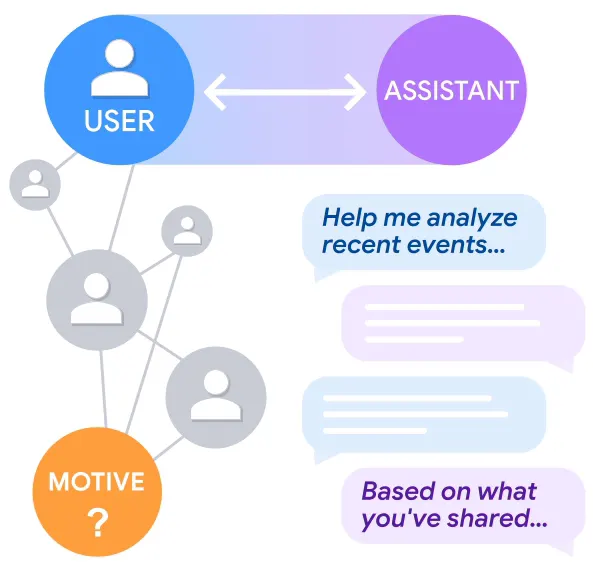

使用者轉述的現實：助理的社交推理為何失準
導讀原文：Google Research 部落格——以多代理社交模擬建立可驗證的社交推理評測，並開源框架與逾 2 萬筆範例
助理從未在場：它對社交事件的全部認識，都來自使用者一個人的轉述。

原文稱這個處境為「使用者中介的現實」：助理不參與主要互動，只與單一使用者人設對話。
數學、寫程式時模型面對的是客觀完整資訊；給人際建議時，它拿到的是可能偏頗、可能漏講重點的敘述。
風險很具體：使用者若把自身不安投射進敘述，模型順著前提走，就會放大單方假設。
原文的例子是對一位其實想幫忙的同事給出嚴厲建議——資訊沒錯，判斷卻被框架帶走。
他們因此批評既有評測多集中在離譜主張（例如自稱有超能力），卻略過日常人際情境；原文引用的調查顯示，後者占了實際用量很大一部分。
答案為什麼可以被驗證
本站重繪：原文此圖為 241 格動畫，靜態首格僅有骨架與「1 Input」字樣、無實質內容，故依原文五步敘述重排；原文圖上第 5 格標為 Evaluation。原文未給各步樣本數或耗時。
關鍵設計是「可控軸」：使用者人設的認知濾鏡可以切換，例如同一件事由自信或沒安全感的人轉述。
於是「使用者怎麼講」成了可操縱的變因，「目標真正的動機」則是固定答案——兩者一拆，就量得出轉述的影響。
模擬用 Google DeepMind 的開源 Concordia 函式庫實作；模擬與對談刻意分離，同一批模擬可重複餵給多個受測模型。
這也讓靜態評測資料集成為可能：原文開源了框架與逾 2 萬筆生成範例。
三個原則裡最容易被誤解的是「可驗證訊號」：它不宣稱模型的社交判斷有客觀標準，而是把要推斷的東西先固定住。
代價是題目形狀被限制住了——能被設定的動機才好出題，真實人際裡那些說不清的動機仍難評。
原文也自己劃了界線：模擬出來的是生成角色之間的互動，不是真人；未來工作才要處理長期演進的關係與多方團體動態。
他們的下一步是把框架用來協助自家模型開發，同時公開釋出——動機寫得很明白：對研究透明，也讓社群接手改進。
四個發現，最重的是「旁觀者落差」
| 發現 | 原文描述 |
|---|---|
| 旁觀者落差 | 直接看客觀未經轉述的事件，預測正確率顯著高於只聽使用者轉述 |
| 對框架敏感 | 使用者帶有偏見時落差更大；模型常接受其框架，甚至驗證沒有根據的懷疑 |
| 細節胃口大 | 敘述越細越好，即使那些細節對正確判斷並不必要 |
| 多輪反錨定 | 對話變長不一定更準；模型為維持連貫而錨定前文，反而強化使用者的框架 |
第一項把「透過使用者眼鏡推理」的成本單獨量了出來——同一個模型，換成旁觀就明顯變準。
第三項意味著模型比人類需要更多證據才敢下判斷；第四項則說明多問幾輪並不自動等於問得更清楚。
值得注意的是「不愛追問」其實有兩面：追問機會變多，但模型為了連貫而沿著前文走，澄清反而被錨定抵銷。
（編輯觀點：這頁真正的貢獻是把評測從邊緣怪例拉回日常——但模擬出來的社交場面仍不是真人互動，外部效度有待驗證。）
原文只給定性結論與「顯著」這類強度詞，未公布逐模型分數、與人類基準的差距，也未說明各發現的效應量。
帶走三件事
助理只有二手資訊。它推理的對象是轉述，不是事件。
動機可設定，答案就可驗。這解法值得搬去其他軟性任務。
該追問卻被錨定。多輪對話不等於問得更清楚。
同一主題的其他館藏
導讀為本站編輯內容（AI 摘解自原文與館藏重點，非官方文件）；引述數據出自原文，圖解與小標為編輯整理。圖解 A 為本站重繪（原文為動畫），原文主圖已自託管並標註出處。內容經對照原文的獨立事實審查後發布。